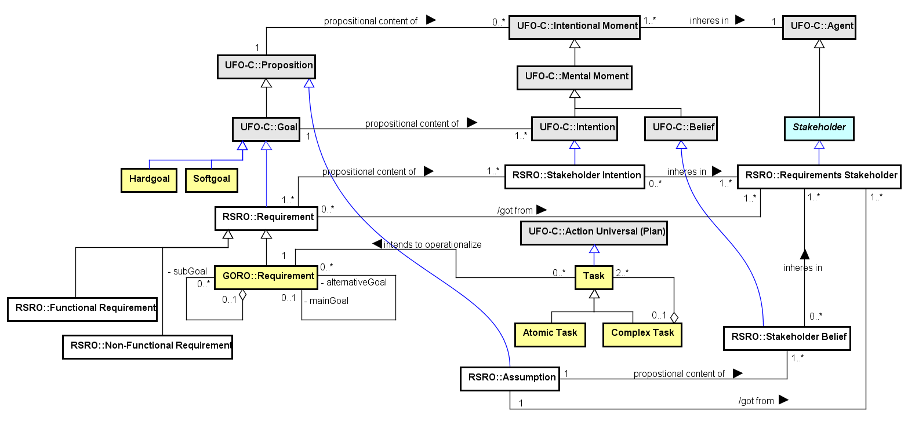

SEON: Networked Ontology Specification
Goal-Oriented Requirements Ontology (GORO)
1. Ontology Description
The Goal-Oriented Requirements Ontology (GORO) intends to represent the nature of the main concepts and relations surrounding Goal-Oriented Requeriments Engineering (GORE) approaches.
2. Related Ontologies
Networked ontologies used by GORO:
3. Ontology Models
Figure 1 presents the conceptual model of the GORO.

Figure 1. GORO conceptual model.
In GORE, the domain characterization (and further identification of requirements and so on) is obtained initially by modeling the agents' goals. Agents bear intentional properties such as Beliefs and Intentions. These intentional properties are called Mental Moments. A Goal is a propositional content of an Intention. An Intention represents not only a will but also an internal commitment of the Agent to act towards the Goal, implying in a Plan to accomplish it. In that way, a Goal as an Intention should be associated with a Plan. Thus, Goals with associated Plans to accomplish them (Tasks) are propositional contents of Intentions.
In a Software Engineering process, a requirement does not refer necessarily to software. Hence, a Requirement is a Goal, in the scope of a specific problem, that describes environmental conditions to be achieved through a desired solution resulting in satisfaction of the underlying strategic goals.
Hardgoals are defined as propositions that are objectively satisfied by a given set of situations. In constrast, Softgoals refer to a vague quality region whose exact boundaries are unknown.
4. Concepts Definition
The following table shows the definitions for GORO concepts.
| Concept |
Definition |
Atomic Task
 |
An Atomic Task is a Task that is not decomposed in other tasks.
|
| Complex Task
|
A Complex Task is a Task that is composed in other tasks.
|
| Hardgoal
|
Hardgoal is a proposition that is objectively satisfied by a given set of situations.
|
| Requirement
|
A Goal in the scope of a specific problem, that describes environmental conditions to be achieved through a desired solution resulting in satisfaction of the underlying strategic goals. In GORE, these goals can be refined by decomposing them into sub-goals, as well as by defining them by means of alternative goals.
|
| Softgoal
|
Softgoal is an initial and temporary vague expression of a goal not suficiently defined yet. It refers to a vague quality region whose exact boundaries are unknown. Thus it is not possible to determine a priori the set of situations that satisfies the softgoal. Its satisfiability is usually related to an agent's judgement.
|
| Task
|
A Task is a plan to achieve a goal.
|
Detailed Concepts
GORO::Atomic Task
Specializes GORO::Task
An Atomic Task is a Task that is not decomposed in other tasks.
GORO::Complex Task
Specializes GORO::Task
A Complex Task is a Task that is composed in other tasks.
Relations:
Complex Task (0..1) <>-- (2..*) Task
GORO::Hardgoal
Specializes UFO::Goal
Hardgoal is a proposition that is objectively satisfied by a given set of situations.
GORO::Requirement
Specializes RSRO::Requirement
A Goal in the scope of a specific problem, that describes environmental conditions to be achieved through a desired solution resulting in satisfaction of the underlying strategic goals. In GORE, these goals can be refined by decomposing them into sub-goals, as well as by defining them by means of alternative goals.
Relations:
Requirement (0..1) (0..*) Requirement
Task (0..*) intends to operationalize (1..1) Requirement
GORO::Softgoal
Specializes UFO::Goal
Softgoal is an initial and temporary vague expression of a goal not suficiently defined yet. It refers to a vague quality region whose exact boundaries are unknown. Thus it is not possible to determine a priori the set of situations that satisfies the softgoal. Its satisfiability is usually related to an agent's judgement.
GORO::Task
Specializes UFO::Action Universal (Plan)
A Task is a plan to achieve a goal.
Relations:
Task (0..*) intends to operationalize (1..1) Requirement
Complex Task (0..1) <>-- (2..*) Task
Goal-Oriented Requirements Ontology (GORO)
Mon Sep 25 21:34:14 BRT 2017